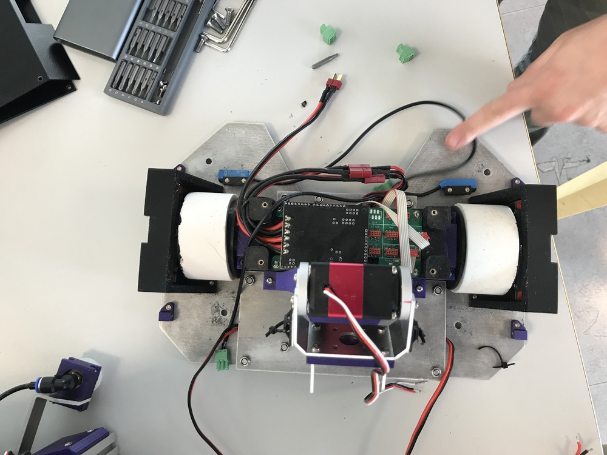
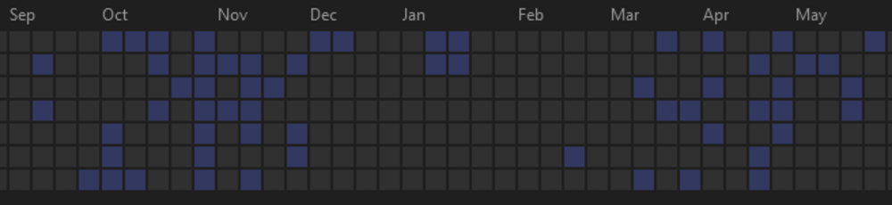
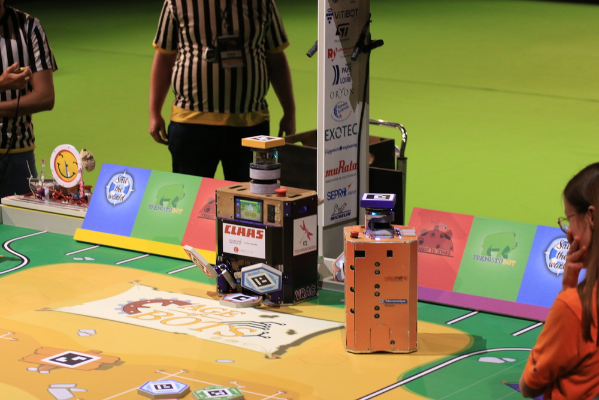
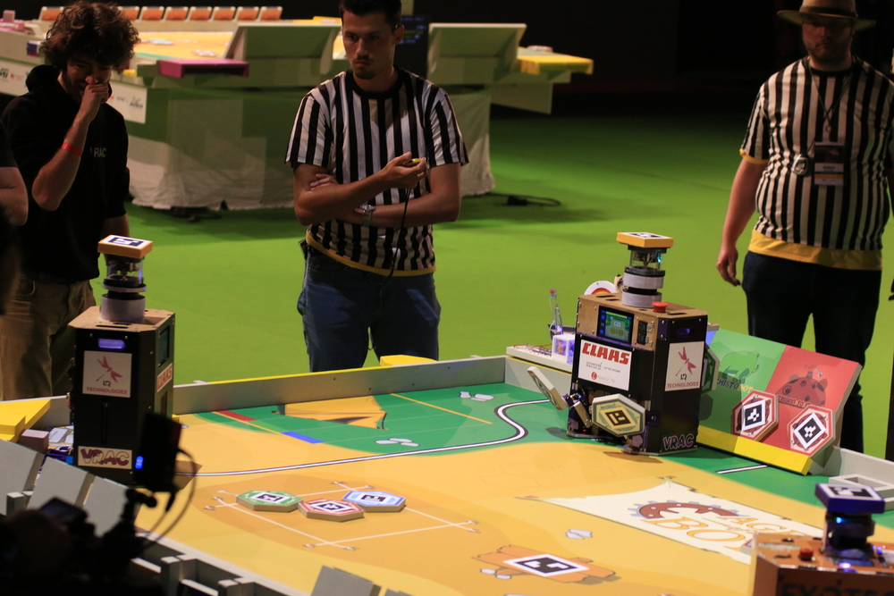
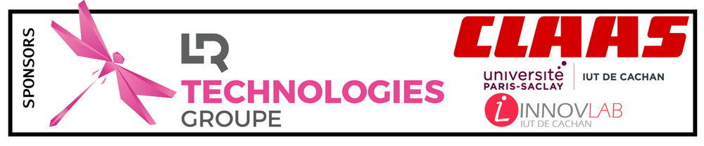

Après de nombreuses années à explorer les quatre coins du monde et de l’univers, nos amis les robots ont décidé d’aller explorer leur passé.
En 2022, les robots iront fouiller les ruines d’une ancienne civilisation robo-tique à la recherche des fragments oubliés de leurs origines.
Carré de fouille, trésors enterrés et statuettes sacrées, voilà ce qui attend nos archéologues chevronnés, et rien ne les arrêtera dans la quête de leur Histoire.
Alors sortez les pelles et les pioches, car l’aventure nous attend !
NOTE: Ce compte rendu à été originalement publié sur le forum de Planète-Sciences le 19 Juin 2022 (lien)
2.1. Introduction
Hello le forum,
Comme chaque année voici notre compte rendu de la coupe, cette année c’était Age of Bots
Pour commencer pépère, voici le poster technique qui s’inspire des feuilles de relevé d’archéologues.
Lors de la coupe on a imprimé une version non préremplie, on a sorti nos plus beaux markers et stylos pour le remplir à la main et faire les croquis comme de vrais archéologues.
D'ailleurs on a bien fait poireauter le jury avec 30 bonnes minutes de papote le temps de remplir le poster le plus rapidement possible au stand. Ils ont eu le droit à la genèse de l'équipe jusqu'à aujourd'hui.
Cette année pour la première fois dans l'histoire de l'asso, la CAO finale du grosbot était très avancé à peine 2 mois après la sortie du règlement (je me suis un peu trop motivé haha) et la CAO du potibot était plus une première version de brouillon.
On a même fait découper le châssis du grosbot en mi-décembre avec la jet d'eau!
 (c'est la première fois on a une pièce en alu usiné dans le robot :o )
Mais ce démarrage foudroyant s'est suivi d'un bon creux entre décembre et début mars (faut bien se reposer quand même)
 ça se voit très bien avec la fréquence d'activité sur le git
Au niveau de dates de début d'assemblage des robots on est resté sur du plus classique, c'est-à-dire que le grosbot a été fabriqué et assemblé à peine plus d'une mois avant la coupe (premier test sur la table du CRAC le 30 avril) et le potibot une semaine et demie (premier test sur table le 18 mai)
2.3. Architecture électronique
L’architecture globale des robots (sans les modifs de dernière minute)
IOBOARD:
Même pas besoin de refaire la carte principale qui s'occupe des capteurs/actionneurs, on garde celle de 2021 avec une légère modification: il faut contrôler les 12 pompes alors que la carte ne peut en gérer que 8.
En 2021 on utilisait 5 moteurs pas à pas avec des driver MP6500, on à eu l'idée de les remplacer par des cartes custom pour la gestion des pompes!
Cette idée de mini shield remplaçable est bien intéressante pour des architectures électroniques matures !
POWERBOARD:
Chaque année j’oubliais systématiquement la distribution des alims, et sa se terminai toujours sur des épissures ou des cartes de proto faite a la main.
Cette année au moins on a un truc basique, c’est pas encore tip top mais c’est déjà sa.
L’an prochain une version qui intègre les alims devrait voir le jour
MOTORBOARD:
Pas de grande nouveauté sur lala carte moteurs, uniquement l'empreinte du shield pololu VNH5019 était décalé d'un pin (adieu l'horrible adaptateur)
TESTEUR DE SERVOS:
Lors de l’assemblage du grosbot, j’ai développé un testeur de servos qui est constitué d'un potentiomètre pour définir la consigne en angle, d'un bouton et d'afficheurs 7 segments.
Il permet d'obtenir rapidement les angles minimum et maximum de chaque servo.
Le bouton lance un mode balayage qui demande comme consigne 0 degré et lance un compteur en millisecondes sur l'afficheur, puis une seconde plus tard redémarre le compteur et demande 180 degrés.
En filmant en 240 images par seconde on peut caractériser le temps de réaction des servos (faut pas trop faire confiante aux datasheet inexistantes chinoises)
VITRINE:
La vitrine se déclenche par la dépose de la statuette qui est recouverte de papier aluminium pour faire contact avec des bandes.
Elle disposait au début d'enceintes, d'un ampli et un module SD qui est parti en fumée au premier test.
MAT CENTRAL:
On aurait dû avoir un système de repérage des échantillons par vidéo sur le mât central mais par faute de temps, il n’y a qu’une batterie et un routeur Wi-Fi.
Il permet de créer un point d'accès Wi-Fi 5GHz et de définir un hostname pour les robots.
PNEUMATIQUE:
On bat notre record de pompes à vide dans le robot avec 12 pompes et 12 valves! (on en utilise que 11 mais garder la symétrie était plus sympa
Petite économie de 20 fils avec une alim commune pour les pompes et idem pour les valves.
RUSH SUR LE TASSEAU:
Pour les phases finales on avait prévu le coup avec une fente dans le robot pour "enjamber" le tasseau centrale afin de récupérer les 2 distributeurs.
Si on est les premiers sur la zone la double prise se passe au poil !
SERVOS:
Lors des tests sur le grosbot, le bras central avant nous a fait quelques frayeurs en ne respectant pas du tout les consignes en angle demandé.
Cela à causer son auto-destruction au niveau du second servo à 2 reprises.
Il ne nous restait qu'un dernier servo de remplacement, on a alors trouvé une solution en limitant le courant de l'alim moteur afin de ne pas casser les engrenages lors de blocages mécaniques.
Lors de la limitation en courant la tension chutait trop et le microcontrôleur du servo redémarrait.
On a donc dessoudé le régulateur 3.3V du pcb et directement connecté un 3.3V externe qui n'est pas dépendant de l'alim servo.
La galère des servos continue avec les 3 servos ultra-rapides (pour la récupération des échantillons face rocher) qui oscillaient en permanence à une haute fréquence (probablement le PID du servo réglé avec le cul, ou pas du tout).
Un de ces servos à cesser de fonctionner sans raison particulière (pas de dégât mécanique ni électronique visible), on l'a alors remplacé par un autre servo plus classique (on n'avait pas de remplacement) et au premier test on a eu de la fumée qui est sortie du robot (et on a eu très peur). Heureusement c'est juste le servo tout neuf qui a cramé (encore pour aucune raison).
Pour la prise des échantillons face rocher devant le campement on avait besoin de servos ultra-rapides, et des capteurs photoélectriques pour déclencher la prise des échantillons.
TIRETTE DE DEMARRAGE:
L'an dernier on avait eu un blocage de la tirette de démarrage en PLA dans le robot lors du démarrage, cette année on corrige définitivement avec un capteur à induction et une tirette en acier!
INSERTS PLASTIQUE:
On aime tellement les inserts plastiques qu'on s'est dit, il nous faut un équivalent pour le bois afin de fixer les cartes élecs au panneau arrière des robots.
Il y a 2 pièces, une qui intègre l'insert au l'autre qui sert d'entretoise, un petit point de colle forte sur chacune des 2 pièces et hop c'est installé.
VIS DE PRESSION:
Le samedi de la coupe au petit matin on a eu les roues qui se sont desserrées de l'arbre moteur, environ 2h de travail pour les remettre (c'est pas idéal). Il faut qu'on se choppe un frein filet plus sérieux l'an prochain pour éviter sa.
POUSSE REPLIQUE:
Le pousse réplique se trouve à l'arrière du potibot, il est juste composé d'un simple servo qui en appuie contre la réplique la maintient dans le robot, mais peut aussi la pousser pour la déposer sur le piédestal. Ce système à toujours fonctionné une fois réglé.
Toujours au petit matin du samedi on en a profité pour resérer l'ensemble des vis des robots, et ce pousse réplique était visiblement très desserré.
Lors de la demi-finale contre ESEO (après 3 matchs et pas mal de tests), le pousse vitrine à refuser de fonctionner, la réplique est tombée juste devant l'abri de chantier et nous a bloqué complètement la dépose des échantillons en dessous donc l'estimation du score était dans les choux. Même problème lors de la petite finale avec ARIG.
L'an prochain on dit adios aux MG996R pour de bon
sueur froide côté ESEOsueur très froide côté VRAC
2.6. Livre d'or
Lorsqu'on est arrivé à la coupe on s'est dit qu'on allait en profiter un maximum, on a eu l'idée de ramener une petite partie de l'ambiance de la coupe à la maison à travers du papier et des stylos!
On partagera le livre d'or sur le discord quand on aura trouvé de quoi le scanner correctement (on n'a qu'une version grave rognée pas top pour le moment).
Un énorme merci a ceux qui y ont contribué de plein gré (ou de force lors du barbecue haha)
(On a pris des photos de tous les robots présents dans notre salle et une bonne partie dans la seconde salle, j'attends juste que le photographe me les transmette )
2.8. Remerciements
On atteint ainsi la 4ème place et un joli prix de la communication!
Merci à nos sponsors qui nous ont permis de participer à cette aventure! LR TECHNOLOGIES CLAAS
Un grand merci aussi à l'IUT de Cachan et au CRAC de nous avoir laissé utiliser leurs locaux, ainsi qu'à l'Innov'Lab.

Et enfin pour clôturer, un énorme bravo à Planète Sciences et aux bénévoles pour cet événement toujours au top!

{kind=link}
{kind=link}
{kind=link}
{kind=link}
{kind=link}
{kind=link}
{kind=link}
{kind=link}
{kind=link}
{kind=link}
{kind=link}
{kind=link}
{kind=link}
{kind=link}
{kind=link}
{kind=link}
{kind=link}
{kind=link}
{kind=link}
{kind=link}
{kind=link}
{kind=link}
{kind=link}
{kind=link}
{kind=link}
{kind=link}
{kind=link}
{kind=link}
{kind=link}
{kind=link}
{kind=link}
{kind=link}
{kind=link}
{kind=link}
{kind=link}
{kind=link}
{kind=link}